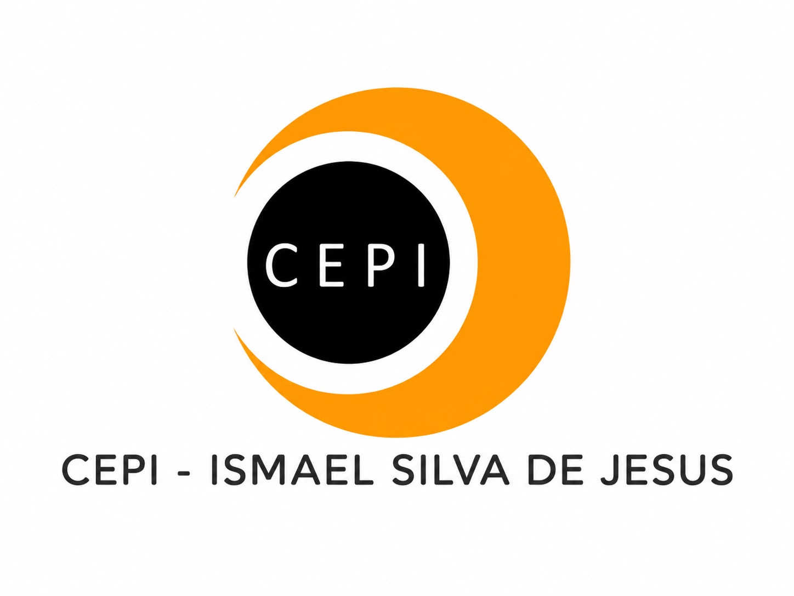
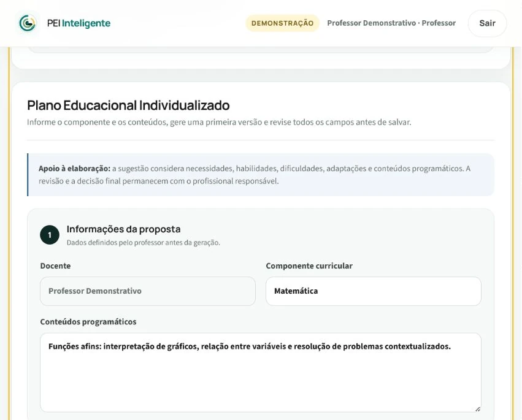
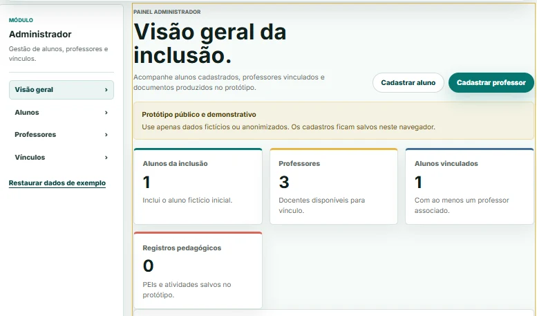

Instituto Federal de Goiás
Câmpus Goiânia
Pesquisa aplicada em educação inclusiva
O PEI Inteligente ajuda escolas a planejar, adaptar e acompanhar a aprendizagem com apoio de inteligência artificial — e com a decisão final sempre nas mãos da equipe pedagógica.
IA para apoiar. Educadores para decidir.
Câmpus Goiânia
Campus Barra do Garças
Campus Laranja da Terra

Escola Estadual Parceira · Goiânia
Recursos
Uma rotina contínua, organizada e compreensível para professores, AEE, coordenação e gestão.

Planejamento assistido
O professor informa o contexto e recebe uma primeira proposta estruturada. Tudo pode ser editado antes de salvar.
Objetivos, metodologia, avaliação e resultados na mesma lógica usada pela escola.
A IA parte das necessidades e habilidades registradas para apoiar o planejamento.
Nenhuma sugestão se torna plano sem a revisão de quem acompanha o estudante.
Visão compartilhada
A equipe acompanha planos, vínculos, registros e demandas em um só lugar — sem perder o histórico entre semestres.
Uma leitura direta do que está em andamento e do que precisa de atenção.
Decisões e evidências permanecem acessíveis para reuniões, devolutivas e novos ciclos.
Professor, AEE e coordenação colaboram sobre a mesma informação.

Jornada do estudante
Uso responsável
O produto foi pensado para reduzir tarefas repetitivas e liberar tempo para o que realmente importa: conhecer, ensinar e acompanhar cada estudante.
A equipe entende o que mudou, quando mudou e por que uma decisão foi tomada.
Uma base comum para apoiar escolas, orientar formação e ampliar boas práticas.
A implantação pode caminhar junto com orientação para o uso responsável da ferramenta.
Histórico reaproveitado e informações reunidas.
Sugestões editáveis, justificadas e contextualizadas.
O profissional revisa, ajusta e aprova cada plano.
Equipe
Um time multidisciplinar ligado à educação pública, à inclusão e ao desenvolvimento responsável de inteligência artificial.
Especialista em Educação Inclusiva

Coordenador da Proposta e Especialista em IA

Articulação institucional

Desenvolvendor Full Stack
Articulação Escolar
Especialista em Computação Aplicada e IA
Perguntas frequentes
Quer conversar sobre um piloto, uma parceria ou o uso na sua rede?
Fale com a nossa equipeNão. A plataforma prepara sugestões e organiza informações. A análise, a edição e a aprovação continuam sendo responsabilidade da equipe que acompanha o estudante.
Sim. Há um protótipo público com os módulos principais, disponível pelo botão “Testar o protótipo” desta página.
O projeto parte da realidade escolar, mas foi concebido para também apoiar institutos, secretarias e redes públicas com visão agregada e continuidade entre unidades.
A IA gera rascunhos a partir do contexto informado pela equipe. Ela não salva nem valida decisões pedagógicas de forma autônoma.
Sim. A equipe está aberta a parcerias para diagnóstico, piloto orientado, avaliação e construção de um caminho de escala responsável.
Parcerias e pilotos
Conheça o protótipo ou converse com a equipe sobre uma aplicação acompanhada na sua escola, instituição ou rede.